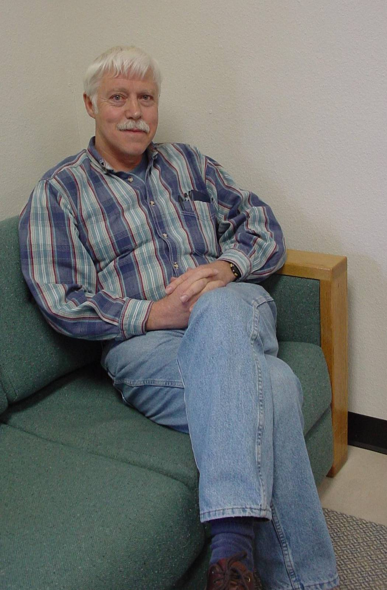

Jack Albert Loeppky
Ph.D., is a Scientist in NMR and a Research Assistant in the Division of Cardiology at
the VA Medical Center in Albuquerque. He has the following research interests in mammalian
Respiratory and Environmental Physiology:
- normal and pathological pulmonary physiology and gas exchange
- effects of hypoxia and hypercapnia
- pulmonary blood flow determinations from respiratory gases
- changes in body gas stores in response to gravitational stress
- pulmonary ventilation/perfusion distributions and their influence on respiratory gas
exchange
- fluid balance changes with simulated microgravity and high altitude
- pulmonary gas exchange at high altitude
- effects of acute mountain sickness on human brain magnetic resonance images
Education and Employment History
B.A.(Physical Ed., Physiology), University of Saskatchewan, Saskatoon, Canada, 1966
M.S.(Physical Ed., Physiology), University of New Mexico, Albuquerque, NM, 1969
Physiology and Biophysics, Colorado State University, Fort Collins, CO, 1970
Ph.D.(Biology), University of New Mexico, Albuquerque, NM
- 1963: Research Assistant, Biology, University of Saskatchewan, Saskatoon, Canada
- 1966-1967: Instructor, Physical Ed., University of Saskatchewan, Canada
- 1967: Research Assistant, Physiology and Pharmacology, University of Saskatchewan,
Canada
- 1967-1968: Graduate and Teaching Assistant, Physical Ed. and Exercise Physiology,
University of New Mexico, Albuquerque, NM
- 1968-1969: Technician, Physiology and Biomedical Engineering, Lovelace Medical
Foundation, Albuquerque, NM
- 1969: Instructor, Physiology Laboratory, Colorado State University, Fort Collins, CO and
Research Assistant, Institute of Arctic Biology, Alaska
- 1970-1975: Research Associate, Physiology, Lovelace Medical Foundation, Albuquerque, NM
- 1975: Technologist-in-Charge, Respiratory Physiology Laboratory, Wellington Hospital,
Wellington, New Zealand
- 1975-1990: Associate Scientist, Research Division, Lovelace Medical Foundation,
Albuquerque, NM
- 1979-1983: Technical Director, Clinical Sleep Laboratory, Lovelace Medical Center,
Albuquerque, NM
- 1981-1983: Chairman, Cardiopulmonary Physiology, Research Division, Lovelace Medical
Foundation, Albuquerque, NM
- 1982-present: Adjunct Assistant Professor of Health, Physical Education and Recreation
(Exercise Science), University of New Mexico, Albuquerque, NM
- 1983-1984: Visiting Scientist, Max-Planck-Institute for Experimental Medicine,
Göttingen, Germany.
- 1990-2000: Scientist, Lovelace Respiratory Research Institute (LRRI), formerly The
Lovelace Institutes (TLI), formerly Lovelace Medical Foundation, Albuquerque, NM
Other Teaching Experience:
- Course lectures: University of Albuquerque and University of New Mexico in Physiology,
Biology and Exercise Science
- Graduate course in Respiratory Physiology, University of New Mexico, 1982
- Nine Graduate Student committees, University of New Mexico
- Research supervision of 11 summer students
Awards and Honors:
- American Physiological Society Travel Grant, 1981
- American Heart Association (New Mexico Affiliate) Grant-in-Aid for "Cerebrovascular
response to CO2 and hypoxia in sleep apnea," July 1, 1982 to June 30, 1984
- Max-Planck-Institute (Göttingen, Germany) Research Fellowship, 1983-1984
- National Science Foundation Grant for Cooperative Research, 1984
- American Heart Association (New Mexico Affiliate) Grant-in-Aid for "Combined
effects of hypoxia and body fluid shifts on cardiopulmonary function and lung water
content", July 1, 1988 to June 30, 1989
- National Aeronautics and Space Administration (NASA) Grant (NAG 9-375/Basic) for
"Interaction between hypoxia and simulated microgravity", May 1, 1989 to April
30, 1992; Renewal Grant: May 1, 1992 to April 30, 1995
- Clinical Research Center, University of New Mexico: Financial support for "Effects
of barometric pressure and hypoxia on fluid balance and altitude illness," 1993
- US Army, Research contract for “Pathophysiology of acute mountain sickness in
women”, October1, 1996 to February 1, 2000
- Reviewer for:
Journal of Applied Physiology
Aviation, Space and Environmental Medicine
International Journal of Biometeorology
Quarterly Journal of Experimental Physiology
Journal of Clinical Pharmacology
Medicine and Science in Sports and Exercise
European Respiratory Journal
Affiliations:
- Associate Member, American Physiological Society, August 1974
- Regular Member, American Physiological Society, April 1979
- Adjunct Assistant Professor of Health, Physical Education and Recreation (Exercise
Science), University of New Mexico, January 1982 to present
- Charter Member, International Society for Gravitational Physiology, January 1993
Selected Publications:
- Loeppky J.A., Luft U.C. Fluctuations in O2 stores and gas exchange with
passive changes in posture. Journal of Applied Physiology. 39: 47-53, 1975.
- Loeppky J.A., Myhre L.G., Venters M.D., Luft U.C. Total body water and lean body mass
estimated by ethanol dilution. Journal of Applied Physiology: Respiratory, Environmental
and Exercise Physiology. 42: 803-808, 1977.
- Luft U.C., Loeppky J.A., Mostyn E.M. Mean alveolar gases and alveolar-arterial gradients
in pulmonary patients. Journal of Applied Physiology: Respiratory, Environmental and
Exercise Physiology. 46: 534-540, 1979.
- Loeppky J.A., Riedesel M.L. (Editors). Oxygen Transport to Human Tissues. Proceedings of
a symposium in honor of Dr. U.C. Luft, held June 25-27, 1981 in Albuquerque, NM. New York:
Elsevier/North-Holland, 405 pages, 1982.
- Loeppky J.A., Luft U.C., Fletcher E.R. Quantitative description of whole blood CO2
dissociation curve and Haldane effect. Respiration Physiology. 51:167-181, 1983.
- Loeppky J.A., Hoekenga D.E., Greene E.R., Luft U.C. Comparison of noninvasive pulsed
Doppler and Fick measurements of stroke volume in cardiac patients. American Heart
Journal. 107: 339-346, 1984.
- Loeppky J.A., Scotto P., Rieke H., Meyer M., Piper J. Arterial-alveolar CO2
equilibration in exercising dogs during prolonged rebreathing. Journal of Applied
Physiology. 58: 1654-1658, 1985.
- Loeppky J.A., Scotto P., Piiper J. Transient PO2 and PCO2
differences between end-tidal gas and arterial blood during rebreathing in awake dogs.
Respiration Physiology. 60: 135-144, 1985.
- Loeppky J.A., Miranda F.G., Eldridge M.W. Abnormal cerebrovascular responses to CO2
in sleep apnea patients. Sleep. 7:97-109, 1984 and Pulmonary Disease Reviews, Vol. 6,
Edited by Bone R.C., New York, John Wiley and Sons, 614-622, 1986.
- Loeppky J.A., Fletcher E.R., Myhre L.G., Luft U.C. Validation and application of single
breath cardiac output determinations in man. Aviation, Space and Environmental Medicine.
57: 759-768, 1986.
- Loeppky J.A., Voyles W.F., Eldridge M.W, Sikes C.W. Sleep apnea and autonomic
cerebrovascular dysfunction. Sleep. 10: 25-34, 1987.
- Scotto P., Loeppky J.A., Piiper J., Farhi L.E. Acid-base status immediately following
rapid changes of alveolar gas composition in awake dogs. Respiration Physiology. 68:
251-258, 1987.
- Loeppky J.A., Hirshfield D.W., Eldridge M.W. The effects of head-down tilt on carotid
blood flow and pulmonary gas exchange. Aviation, Space and Environmental Medicine. 58:
637-644, 1987.
- Loeppky J.A., Caprihan A., Luft U.C. VA/Q inequality during clinical
hypoxemia and its alterations. In: Man in Stressful Environments: Diving, Hyper-and
Hypobaric Physiology, Edited by Shiraki K, Yousef M.K. Springfield, IL: CC Thomas,
199-232, 1987.
- Chick T.W., Scotto P., Icenogle M.V, Sikes C.W., Doyle M.P., Riedel CE, Wood SC, Loeppky
J.A. Effects of pentoxifylline on pulmonary hemodynamics during acute hypoxia in
anesthetized dogs. American Review of Respiratory Disease. 137: 1099-1103, 1988.
- Loeppky J.A., Luft U.C. Work capacity, exercise responses and body composition of
professional pilots in relation to age. Aviation, Space and Environmental Medicine. 60:
1077-1084, 1989.
- Loeppky J.A., Scotto P., Chick T.W., Luft U.C. Effects of acute hypoxia on
cardiopulmonary responses to head-down tilt. Aviation, Space and Environmental Medicine.
61: 785-794, 1990.
- Loeppky J.A., Scotto P., Riedel C., Avasthi P., Koshukoshy V., Chick T.W.
Cardiopulmonary responses to acute hypoxia, head-down tilt, and water loading in
anesthetized dogs. Aviation, Space and Environmental Medicine. 62: 1137-1146, 1991.
- Loeppky J.A., Scotto P., Riedel C.E., Roach R., Chick T.W. Effects of acid-base status
on acute hypoxia pulmonary vasoconstriction and gas exchange. Journal of Applied
Physiology. 72: 1789-1797, 1992.
- Loeppky J.A., Fletcher E.R., Roach R.C., Luft U.C. Relationship between whole blood base
excess and CO2 content in vivo. Respiration Physiology. 94: 109-120, 1993.
- Loeppky J.A., Roach R.C., Selland M.A., Scotto P., Luft F.C., Luft U.C. Body fluid
alterations during head-down bedrest at moderate altitude. Aviation, Space and
Environmental Medicine. 64: 265-274, 1993.
- Loeppky J.A., Roach R.C., Selland M.A., Scotto P., Greene E.R., Luft U.C. Effects of
prolonged head-down bedrest on physiological responses to moderate hypoxia. Aviation,
Space and Environmental Medicine. 64: 275-286, 1993.
- Melo M.F.V, Loeppky J.A., Caprihan A., Luft U.C. Alveolar ventilation to perfusion
heterogeneity and diffusion impairment in a mathematical model of gas exchange. Computers
and Biomedical Research. 26: 103-120, 1993.
- Whitson P.A., Cintron N.M., Pietrzyk R.A., Scotto P., Loeppky J.A. Acute effects of
head-down tilt and hypoxia on modulators of fluid homeostasis. Journal of Clinical
Pharmacology. 34: 427-433, 1994.
- Roach R.C., Loeppky J.A., Icenogle M.V. Acute mountain sickness: increased severity
during simulated altitude compared with normobaric hypoxia. Journal of Applied Physiology.
81: 1908-1910, 1996.
- Loeppky J.A., Scotto P, Roach R.C. Acute ventilatory response to simulated altitude,
normobaric hypoxia and hypobaria. Aviation, Space and Environmental Medicine. 67:
1019-1022, 1996.
- Loeppky J.A., Icenogle M., Scotto P., Robergs R., Hinghofer-Szalkay H., Roach R.C.
Ventilation during simulated altitude, normobaric hypoxia and normoxic hypobaria.
Respiration Physiology. 107: 231-239, 1997.
- Loeppky J.A. The effects of low levels of CO2 on ventilation during rest and
exercise. Aviation, Space and Environmental Medicine. 69: 368-373, 1998.
- Caprihan A., Sanders J.A., Cheng H.A., Loeppky J.A. Effect of head-down tilt on brain
water distribution. European Journal of Applied Physiology and Occupational Medicine. 79:
367-373, 1999.
- Loeppky J.A., Kuethe D.O., Altobelli S.A., Scotto P., Piiper J. Effects of gas density
on experimentally obstructed ventilation during acute hypoxia. Respiration Physiology.
117: 151-160, 1999.
- Roach R.C., Maes D., Sandoval D., Robergs R.A., Icenogle M., Hinghofer-Szalkay H., Lium
D., Loeppky J.A. Exercise exacerbates acute mountain sickness at simulated high altitude.
Journal of Applied Physiology. 88: 581-585, 2000.